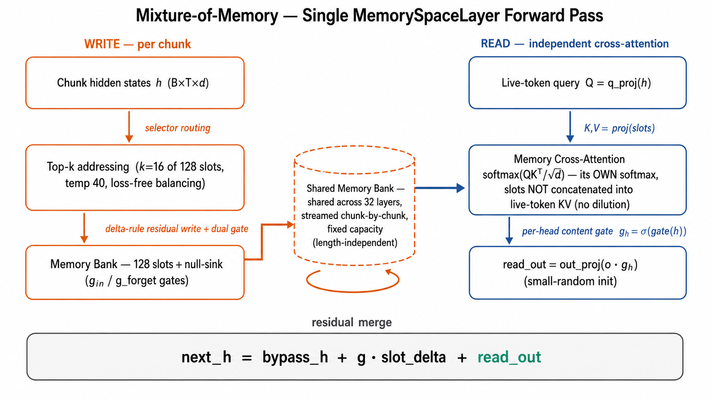

我们讲 Agent 时说的「记忆」，大多在模型之外；而 Agent 真正读懂上下文，靠的是模型内部的 attention 与 context window —— 那一层，才是所有记忆设计的起点和瓶颈。
RAG、记忆压缩、外部存储，本质都在规避 context window 的硬上限。有效，但都建立在「模型一次能读的有限」这个前提上。
与其在外面打补丁，不如直接问：能否让模型用固定开销，把任意长的上文压进内部记忆？若成立，上层许多补丁可被简化。
MoM 是在机制层的一次尝试 —— 改造记忆本身，而非外接更多存储。
无论上文多长，记忆恒为 128 槽，开销与长度无关。
记忆的写入与读回是独立模块，不绑死在每步 forward。
BABILong：答案埋进长噪声，考检索 + 推理。

无论上文多长，bank 恒为 128 槽、跨 32 层共享，逐 chunk 流式累积 —— 开销与长度无关。
记忆走独立 softmax 的 cross-attn，slot 不并入 live-token KV，因此长序列下读出信号不会被冲淡。
read_out 按头门控后直接加残差，不被共享标量 inject-gate 压制 —— 这是 P8 比早期 frozen-xattn（0k 也塌）work 的根因。
| 训练程度 | 近 | 中 | 远 |
|---|---|---|---|
| 早期 step500 | 86 | 64 | 46 |
| 中期 step2500 | 47 | 31 | 31 |
| 充分 step5000 | 62 | 30 | 22 |
当前结构只有 L1 memory slot。训练越久，L1 越倾向去承担预训练式的高级语义压缩，而不是「精确记住某条事实」—— 检索能力因此被挤掉。
启示：最好的 checkpoint 往往不是最后那个；分层记忆是后续方向。
| 每块 | 1k | 4k | 8k |
|---|---|---|---|
| 128 | 42 | 31 | 27 |
| 256 | 69 | 36 | 37 |
| 512 ★ | 86 | 64 | 50 |
| 1024 | 41 | 19 | 16 |
分层图里那条反哺箭头是最有意思的地方：一旦记忆的读写从模型计算里拆出来，它就不只是模型 trick，而可能成为 Agent 栈里一块可被基础设施管理的记忆层。